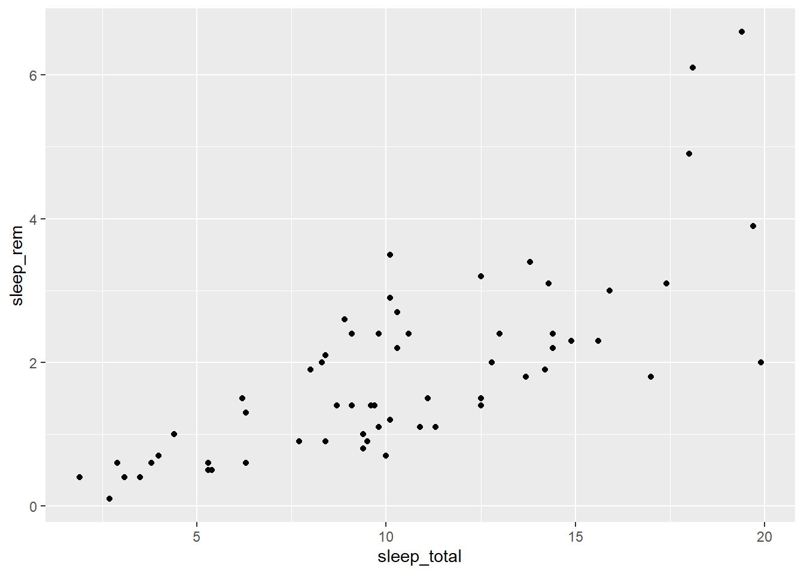
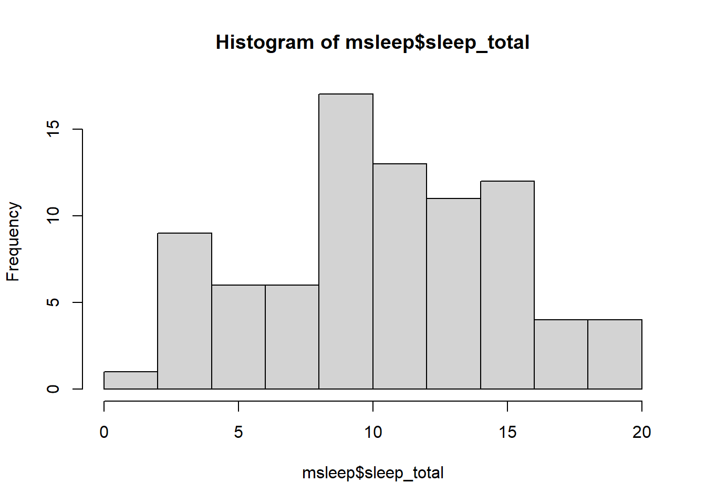

1+13 R 기본
R과 RStudio를 설치하고 운영하는 걸 배울 거에요. 이 장을 마치면 이걸 할 수 있어요.
- R 실행 파일을 (*.R) 만든다.
- R 데이터를 저장한다.
- R 함수를 이용해서 데이터를 분석한다.
- R에 패키지를 추가한다.
- 기술적 통계를 (평균, 중앙값 등) 다룬다.
- 수학 계산을 한다.
- 멋진 그래프를 다양한 기법으로 그린다.
3.1 R과 RStudio 설치
아래의 사이트에서 R과 R Studio를 다운해서 설치하세요.
https://posit.co/download/rstudio-desktop/#download
가능하면 가장 최신의 버전으로 설치하는 게 좋아요.
3.2 RStudio
R Studio는 R을 편하게 사용하려고 만든 거니까 우리는 R Studio를 사용하게 될 겁니다. R Studio를 실행하면 화면이 나타납니다.
처음에 실행하면 패널이 세 개만 있을 거에요. 하지만 4 패널을 금방 생성해서 사용할 거니까 패널이 네 개라고 보는 게 좋아요.
- 스크립트 패널: 여기가 실행파일(스크립트)을 만들고 수정하는 곳이에요.
- 콘솔 패널: 여기가 R 코드가 실행되고 결과와 메시지가 나오는 곳이에요.
- 환경 패널: 여기 데이터 목록이 나올 거에요.
- 파일, 그래프, 도움, 패키지 패널: 그 말대로 그것들이 나올 거에요.
RStudio를 종료할 때 워크스페이스를 (.RData) 저장할 거냐고 묻는 경우가 있는데 안 하는 게 좋아요. 자칫하면 혼란이 생기거든요. R 실행파일만 저장하고 다음에 그걸 다시 실행하면 됩니다. 물론 R 실행파일이나 (.R) Quarto 파일은 (.qmd) 잊지 말고 저장해야죠.
3.3 R 코드 실행
R 코드는 R에게 명령을 실행하라는 지시문입니다. 코드로 이루어진 파일이 R 실행파일인데 이름 뒤에 .R이 붙어요. 데이터를 다루고 분석하는 일을 코드를 통해서 지시하는 겁니다. 대개 코드는 한 줄에 하나의 지시문을 적어요.
바로 아래에 나타난 코드 뭉치를 코드 청크라고 부릅니다. Quarto에서는 코드 청크를 본문에 넣고 그걸 바로 실행해서 결과를 문서 안에 포함하는 게 가능하지만 아직 안 배웠으니 콘솔을 사용합니다. 아래의 코드를 콘솔에 적거나 복사해서 붙이고 엔터를 눌러서 실행해 보세요.
코드 뭉치는 한 줄도 되지만 대개 여러 줄로 구성되는 게 보통입니다.
2*2
1+2*3-5R 코드를 콘솔에 넣고 엔터키를 치면 그 코드를 실행하고 결과를 되줍니다. 위의 코드를 복사해서 콘솔에 넣고 엔터를 쳐 실행해보세요.
3.3.1 R 스크립트
콘솔 안에서 일할 때, 자판의 윗 화살표 ↑를 누르면 바로 전에 사용한 코드를 다시 불러 올 수 있습니다. 그러나 그것보다 스크립트 패널을 사용하는 게 더 효율적입니다. R 스크립트 파일은 편집하고 즉석에서 실행하고 수정할 수 있어서 훨씬 효율적이에요.
스크립트 파일을 새로 만들려면, Ctrl+Shift+N을 누르거나 메뉴에서 File > New File > R Script를 선택하면 됩니다. 스크립트 패널에 새 스크립트 파일을 열고 아래를 복사해서 넣어 보세요. 그리고 run 단추를 클릭해서 한 줄씩 실행해 보세요.
1+1
2*2
1+2*3-5
(1+2)*3-5스크립트 패널에서는 콘솔 패널과 달리, 엔터키를 누르면 코드를 실행하는 게 아니라 줄을 바꿉니다. 이것은 스크립트 패널은 스크립트 파일의 편집이 주요 목적이기 때문입니다. 스크립트 패널에서 R 코드를 실행하려면 아래처럼 합니다.
- Ctrl+Shift+Enter를 친다.
- Ctrl+Alt+Enter를 치면, 실행을 하지만 코드를 되보여주거나 결과를 보여주지 않는다.
- (외부파일을 실행하려면, 소스 Source 버튼을 클릭한다.)
그냥 Run 버튼을 클릭하면 커서가 있는 한 줄의 코드가 실행합니다. 만일 그 전에 마우스로 선택된 블럭이 있으면 그 선택 블럭이 실행합니다. Run 버튼 대신에 Ctrl+Enter를 쳐도 됩니다.
3.4 변수와 함수
3.4.1 데이터 저장
아래처럼 변수 x 에 숫자를 부여합니다. 이때 자판의 왼꺾쇠 “<”와 하이폰 “-”을 빈칸없이 “<-” 이렇게 사용합니다. 이게 실행되면 x라는 변수가 생기고 동시에 그 x 변수는 4의 값을 갖게 됩니다.”
x <- 4이걸 실행하면 아래처럼 나타납니다.
x <- 4
x # x를 출력에 나타나게 한다[1] 4[1]가 의미하는 건 곧 배울 겁니다. 변수 x를 만들었으니 아래처럼 사용하면 됩니다. 아래를 복사해서 실행해 보세요.
x + 1
x + x변수를 만들 때 아래처럼 수식을 사용해도 되고 다른 변수를 넣어도 됩니다. 기호와 숫자 사이에 빈칸은 있어도 되고 없어도 됩니다. 보통 빈칸을 넣습니다.
x <- 1 + 2 + 3 + 4좀 드물게 사용하지만, 화살표 방향이 달라도 됩니다.
2 + 2 -> y3.4.2 변수 이름을 만들기
간단하게 만들기. 각각 y, z, x 변수를 만듭시다.
y <- 100
z <- 20
x <- y - z또는 알아보기 쉽게 만들기. 각각 소득, 세금, 세후_소득 등 세 변수를 만듭시다.
소득 <- 100
세금 <- 20
세후_소득 <- 소득 - 세금잘 되었는지 변수 세후_소득을 출력해봅니다. 80이 나오면 맞게 된 겁니다.
세후_소득[1] 80이것도 됩니다. 실행한 뒤에 환경 패널에서 변수가 제대로 생겼나 봅니다.
세후_소득 <- 소득 <- 120영어로 변수를 만들 때, R은 대문자와 소문자를 구분해요. 즉 Taxes와 taxes를 다른 변수로 인식합니다.
변수를 만들 때 -, +, *, :, =, !, $는 사용하지 못합니다. 왜냐하면 이 기호는 실행문에서 사용하기 때문입니다.
아래는 변수 이름을 만드는 일반적 방법입니다.
- _ 기호 이용; snake_case, household_net_income, 가구_소득
- 대소문자 이용; snakeCase, SnakeCase, NetIncome
- . 기호 이용; period.case, 경기도.가구당.소득
- 그냥 붙이기; householdnetincome, 경기도가구당소득
변수를 만들 때, 설명을 붙이면 나중에 알아보기 편해요. # 기호를 문장 앞에 붙이면 R은 그 문장을, 코드가 아닌, 설명으로 인식해서 무시합니다. 코드 오른쪽에 붙이면 그 자리부터 설명으로 인식합니다.
# 소득과 세금을 결정한다
소득 <- 100 # 소득을 100으로
세금 <- 20 # 세금을 20으로# 세후 소득의 결정
세후_소득 <- 소득 - 세금스크립트 패널에서 Ctrl+Shift+C를 누르면 커서가 위치한 줄의 # 기호가 없어지고 생기고 합니다. C는 Comment를 뜻합니다. #를 넣어서 그 줄만 실행이 안 되게 할 수 있고, 다음에 #를 빼서 실행하도록 변경할 수 있어요.
3.4.3 벡터와 데이터 프레임
변수에는 하나의 숫자/값만 넣는 게 아니라 여러 개의 숫자/값을 넣을 수 있어요. 이럴 때 벡터 변수라고 해요. 통상적으로 변수 하나가 여러 사례를 갖게 되니까 벡터 변수가 통상적으로 사용하는 변수와 유사합니다.
즉 일일이 사람마다 변수로 취급하고 값을 넣어주게 되면 아래처럼 불편합니다.
사람1_나이 <- 28
사람2_나이 <- 48
사람3_나이 <- 47
# ...계속된다그래서 변수에 한꺼번에 사례의 변수값을 넣는 게 편하지요. 여러 개 변수값을 갖는 변수를 벡터 변수 또는 그냥 벡터라고 부릅니다. 벡터를 만드는 함수는 c( )입니다.
나이 <- c(28, 48, 47, 71, 22, 80, 48, 30, 31)벡터 변수에 연산을 하면 각각에 대해서 계산합니다.
나이_개월수 <- 나이 * 12
나이_개월수[1] 336 576 564 852 264 960 576 360 372변수에 변수값이 여러 개 포함되면 벡터이고, 그런 벡터가 여러 개 있으면 데이터 프레임이 됩니다. 우리가 통계 분석에 사용하는 것은 데이터 프레임입니다. 벡터 테이블 tables of vectors 이라고 부르기도 합니다.
앞에서 벡터변수 ’나이’는 지정했으니까 벡터변수 ’구매량’을 하나 더 만듭니다.
구매량 <- c(20, 59, 2, 12, 22, 160, 34, 34, 29)두 개의 벡터를 합쳐서 데이터 프레임을 만듭니다.
책가게 <- data.frame(나이, 구매량)콘솔 패널에 책가게를 쳐서 실행해서 결과를 봅니다. Quarto에서 실행하는 것과 (실제 결과는 같지만) 보이는 output은 약간 다를지 모릅니다. 나이와 구매량은 벡터이고 책가게는 데이터프레임이에요.
책가게 나이 구매량
1 28 20
2 48 59
3 47 2
4 71 12
5 22 22
6 80 160
7 48 34
8 30 34
9 31 29나이를 프린트 해 볼까요?
나이[1] 28 48 47 71 22 80 48 30 31긴 벡터를 가진 변수를 만들어 실험해 봅시다. 벡터를 만들 때 변수값 사이에 쉼표를 넣고, 줄을 바꿀 때는 엔터를 칩니다. 자동으로 들여쓰기를 합니다. 줄바꿈한 것은 실행할 때 (콘솔 패널에서) 줄 맨앞에 +가 붙는데 이건 R이 아직 명령이 이어지고 있다는 걸 인식한 겁니다.
거리 <- c(687, 5076, 7270, 967, 6364, 1683, 9394, 5712, 5206,
4317, 9411, 5625, 9725, 4977, 2730, 5648, 3818, 8241,
5547, 1637, 4428, 8584, 2962, 5729, 5325, 4370, 5989,
9030, 5532, 9623)
거리 [1] 687 5076 7270 967 6364 1683 9394 5712 5206 4317 9411 5625 9725 4977 2730
[16] 5648 3818 8241 5547 1637 4428 8584 2962 5729 5325 4370 5989 9030 5532 9623실행할 때의 콘솔 패널 넓이에 따라서 output이 줄바꿈하는 부분이 달라집니다.
변수에 값이 하나밖에 없어도 [1]이 앞에 붙는다는 것은 그 변수가 벡터라는 걸 보여줍니다.
x <- 4
x[1] 4잇단 숫자는 아래처럼 생성합니다.
x <- c(1:5)
x[1] 1 2 3 4 53.4.4 함수
함수 functions 는 미리 만들어놓은 지시문의 뭉치를 간단하게 표현한 겁니다. 대개 함수이름(변수이름)의 형태를 가집니다. 아래의 mean은 평균을 계산하는 함수입니다.
나이 <- c(28, 48, 47, 71, 22, 80, 48, 30, 31)
mean(나이)[1] 45함수는 여러 개의 변수를 이용하기도 합니다. 아래는 상관계수를 구하는 함수인 cor( )입니다. 함수는 추가로 옵션이 붙기도 합니다.
나이 <- c(28, 48, 47, 71, 22, 80, 48, 30, 31)
구매량 <- c(20, 59, 2, 12, 22, 160, 34, 34, 29)
cor(나이, 구매량, method = "pearson")[1] 0.589402변수나 옵션이 필요하지 않아도 함수는 ( )를 포함합니다. 예를 들어 현재 시간을 넣어주는 Sys.time( )도 ( )가 필요합니다. 물론 안에는 아무것도 안 넣어요.
Sys.time()[1] "2023-07-15 15:50:50 KST"함수는 여러분도 만들어서 사용할 수 있습니다. 그런 걸 사용자 정의 함수라고 합니다. Example 6.4 예 그 예가 있습니다.
3.4.5 수학 연산
사칙 연산에는 +, -, *, / 를 사용합니다. 아래에 다른 것들이 있습니다.
abs(x): 절대값 \(|x|\)sqrt(x): 제곱근 \(\sqrt{x}\)log(x): x 자연로그값 \(e\)log(x, base = a ): x 로그값 aa^x: a의 x 제곱 \(a^x\)exp(x): e의 x 제곱 \(e^x\)sum(x): x 가 벡터일 때 \(x=(x_1, x_2, x_3, ..., x_n)\) 총합 \(\sum_{i=1}^{n}x_i\)prod(x): x가 벡터일 때 \(x=(x_1, x_2, x_3, ..., x_n)\) 모든 걸 곱한 값 \(\prod_{i=1}^{n}x_i\)pi: \(\pi\) 값x %% a: x 를 a로 나눈 나머지값factorial(x): x!choose(n,k): 순열 \({n}\choose{k}\)
3.5 패키지
R은 수많은 함수를 포함해서 수많은 일을 하지만, 그래도 데이터 분석의 모든 것을 다 하지는 못합니다. 그래서 패키지가 필요합니다. 패키지는 R에 포함하는 새로운 함수와 데이터셋의 집합체를 말합니다. 패키지는 통계분석, 그래프 그리기, C++ 코드, 데이터 처리 등 모든 분야에서 새로 개발되어 R에 포함됩니다. R은 20,000개가 넘는 패키지를 포함합니다.
예를 들어, 그래프 그리기 기능을 확장하는 ggplot2라는 패키지를 설치해서 각종 그래프를 그릴 수 있어요. ggplot2 패키지를 설치하려면 RStudio 메뉴에서 Tools> Install packages 를 선택하거나, RStudio의 오른쪽 아래 파일, 도움 패널 창에 있는 메뉴의 Packages 탭> Install 클릭해서 설치해도 됩니다.
콘솔 창에 아래의 코드를 적고 실행해도 됩니다.
> install.packages(“ggplot2”)
설치가 다 되면 아래의 메시지가 나타납니다.
package 'ggplot2' successfully unpacked and MD5 sums checked
설치가 되었다고 바로 사용하지 못해요. 설치한 패키지에 포함한 함수나 데이터셋을 사용하려면, 매번 R을 시작할 때 library(패키지_이름) 함수를 실행해서 활성화해야 합니다. 패키지가 필요한 스크립트 파일은 맨 앞에 library 함수를 포함할 것을 권장합니다.
library(ggplot2)패키지 활성화는 R Studio 오른쪽 아래 패널 메뉴의 패키지탭을 클릭하고 나타난 패키지 목록에 해당 패키지 이름이 있으면 그 체크 박스를 체크해도 역시 됩니다. 체크하는 순간 콘솔 박스에서 library(패키지 이름)이 실행합니다.
3.6 기술적 통계
여기서는 ggplot2 패키지에 실린 데이터셋 둘을 사용할 거예요.
diamands: 다이아몬드 50,000여 개의 가격msleep: 포유류 83 종류의 잠 시간
만일 여기서 R을 새로 시작했다면, 먼저 library를 이용해서 활성화 시켜야겠죠. 설치 안 했으면 먼저 설치를 해야 합니다.
# install.packages("ggplot2")
library(ggplot2)분석 전에 먼저 msleep 데이터셋을 살펴봅니다.
msleep# A tibble: 83 × 11
name genus vore order conservation sleep_total sleep_rem sleep_cycle awake
<chr> <chr> <chr> <chr> <chr> <dbl> <dbl> <dbl> <dbl>
1 Cheet… Acin… carni Carn… lc 12.1 NA NA 11.9
2 Owl m… Aotus omni Prim… <NA> 17 1.8 NA 7
3 Mount… Aplo… herbi Rode… nt 14.4 2.4 NA 9.6
4 Great… Blar… omni Sori… lc 14.9 2.3 0.133 9.1
5 Cow Bos herbi Arti… domesticated 4 0.7 0.667 20
6 Three… Brad… herbi Pilo… <NA> 14.4 2.2 0.767 9.6
7 North… Call… carni Carn… vu 8.7 1.4 0.383 15.3
8 Vespe… Calo… <NA> Rode… <NA> 7 NA NA 17
9 Dog Canis carni Carn… domesticated 10.1 2.9 0.333 13.9
10 Roe d… Capr… herbi Arti… lc 3 NA NA 21
# ℹ 73 more rows
# ℹ 2 more variables: brainwt <dbl>, bodywt <dbl>처음 10개 행을 보여줄 겁니다. 또 83 x 11 이라는 데이터셋 정보를 알려줄 텐데 83개 행에 (가로줄: 83개 사례) 11개 열이 (세로줄: 11개 변수) 있다는 겁니다. 모든 걸 보려면 아래의 함수를 사용합니다. View함수를 사용하면서 V가 대문자라는 걸 주의하세요. R 함수와 변수는 영문 대소문자를 구분합니다.
View(msleep)변수값 NA는 결측값 missing value 입니다. 결측값은 잘못 입력한 값이므로 통계에 사용하지 못하는 값입니다.
아래는 데이터셋에 대한 정보를 알리는 함수입니다. 복사해서 스크립트 패널에 넣고 실행해 보세요.
head(msleep)
tail(msleep)
dim(msleep)
str(msleep)
names(msleep)head: 앞 열(세로줄: 변수)들의 정보를 알립니다.dim: 열과 행(가로줄: 사례)의 숫자를 알립니다.tail: 뒤 열들의 정보를 알립니다.str: 변수의 정보를 알립니다. (chr은 문자,num은 숫자,dbl은 소숫점을 가진 숫자)names: 변수들의 이름으로 구성한 벡터를 되줍니다.
데이터셋의 자료형태는 티블 tibble 자료형과 데이터프레임 data.frame 자료형이 있습니다. 티블은 데이터 프레임을 우리가 흔히 보는 형태로 바꾸어 준 것입니다. 우리는 데이터를 저장할 때 (즉 엑셀에 넣을 때) 사례는 열로, 변수는 행으로 저장합니다. 이것이 우리가 흔히 보는 데이터 저장 방식으로 티블 tibble 자료형입니다. 위에서 여러 함수들을 이용해서 msleep 정보를 꺼낼 때 맨 위에 나타나는 tibble은 이 데이터셋이 티블 형태라는 걸 알립니다.
데이터프레임 자료형을 티블 자료형으로 변환하려면 as_tibble( ) 함수를 사용하고, 직접 만들려면 tibble( ) 함수를 사용합니다. (먼저 tibble 패키지를 활성화할 필요가 있을지 몰라요.)
?msleep위 코드의 실행 결과는 도움 패널에 나타나며 msleep 데이터셋의 자세한 설명을 알려줍니다. 아직 msleep은 환경 패널 Environment Panel 의 변수 목록에 나타나지 않았다는 걸 주목하세요. 목록에 포함하려면 아래 코드를 실행합니다.
data(msleep)자, 이제 환경 패널의 데이터 목록에 나타났습니다. 환경패널의 msleep 왼쪽의 작고 파란 삼각형을 클릭해서 msleep 데이터셋을 펼쳐보면 변수 목록과 속성이 나타납니다.
3.6.1 숫자형 자료
숫자형 자료 numerical data 의 기술적 통계를 산출하는 간단한 방법은 summary 함수에요. 문자 변수에는 아무 정보도 되주지 않고, 숫자 변수에는 여러 정보를 되줍니다.
summary(msleep) name genus vore order
Length:83 Length:83 Length:83 Length:83
Class :character Class :character Class :character Class :character
Mode :character Mode :character Mode :character Mode :character
conservation sleep_total sleep_rem sleep_cycle
Length:83 Min. : 1.90 Min. :0.100 Min. :0.1167
Class :character 1st Qu.: 7.85 1st Qu.:0.900 1st Qu.:0.1833
Mode :character Median :10.10 Median :1.500 Median :0.3333
Mean :10.43 Mean :1.875 Mean :0.4396
3rd Qu.:13.75 3rd Qu.:2.400 3rd Qu.:0.5792
Max. :19.90 Max. :6.600 Max. :1.5000
NA's :22 NA's :51
awake brainwt bodywt
Min. : 4.10 Min. :0.00014 Min. : 0.005
1st Qu.:10.25 1st Qu.:0.00290 1st Qu.: 0.174
Median :13.90 Median :0.01240 Median : 1.670
Mean :13.57 Mean :0.28158 Mean : 166.136
3rd Qu.:16.15 3rd Qu.:0.12550 3rd Qu.: 41.750
Max. :22.10 Max. :5.71200 Max. :6654.000
NA's :27 개별 정보를 알고 싶을 때는 아래의 함수를 사용합니다. 개별 변수를 나타내는 방법은 데이터셋이름$변수이름 입니다. 아래의 통계에 대한 자세한 것은 6 장 기술적 통계에서 배울 겁니다.
library(ggplot2)
mean(msleep$sleep_total) # 평균
median(msleep$sleep_total) # 중앙값
max(msleep$sleep_total) # 최대값
min(msleep$sleep_total) # 최소값
sd(msleep$sleep_total) # 표준편차
var(msleep$sleep_total) # 분산
quantile(msleep$sleep_total) # 사분위값[1] 10.43373
[1] 10.1
[1] 19.9
[1] 1.9
[1] 4.450357
[1] 19.80568
0% 25% 50% 75% 100%
1.90 7.85 10.10 13.75 19.90 하루 8시간 이상 자는 포유 동물의 빈도나 비율을 알려면 아래처럼 합니다.
sum(msleep$sleep_total > 8) # 빈도 (숫자)
mean(msleep$sleep_total > 8) # 상대빈도 (비율)[1] 61
[1] 0.7349398결측값이 있을 때 옵션을 넣어야 해요. 그냥 하면 NA가 나옵니다.
mean(msleep$sleep_rem)[1] NA결측값을 무시하라는 조건을 넣습니다.
mean(msleep$sleep_rem, na.rm = TRUE)[1] 1.87541변수가 두 개 이상이 연관되는 함수의 결측값 조건은 use를 써요. 아래는 변수 하나라도 결측값이 있으면 그 쌍은 통계에 포함하지 말라는 옵션이에요.
cor(msleep$sleep_total, msleep$sleep_rem, use = "complete.obs")[1] 0.7517553.6.2 범주형 자료
범주형 자료 categorical data 의 예입니다. vore와 conservation 변수는 범주형입니다. 이런 범주형 변수는 평균, 최대값 같은 건 의미가 없어요. 테이블을 만들어 빈도를 보는 게 좋아요. 범주형 변수는 R에서 요인 factor 이라고 부르기도 합니다. 테이블을 만드는 함수는 table입니다.
table(msleep$vore)
carni herbi insecti omni
19 32 5 20 빈도 테이블을 비율/상대빈도로 변환하는 함수는 proportions에요.
proportions(table(msleep$vore))
carni herbi insecti omni
0.25000000 0.42105263 0.06578947 0.26315789 교차 테이블을 만드는 데도 table 함수를 사용합니다. margin의 null, 1, 2는 전체, 행, 열 중에 어느 것이 100%인지 선택하는 조건입니다.
# 빈도
table(msleep$vore, msleep$conservation)
# 비율, margin=1은 행으로 per row:
proportions(table(msleep$vore, msleep$conservation),
margin = 1)
# 비율, margin=2는 열로 per column:
proportions(table(msleep$vore, msleep$conservation),
margin = 2)3.7 숫자형 자료의 그래프
주장이나 논리를 펼 때 근거를 제시해야 합니다. 특히 숫자나 통계를 근거로 제시하는 건 최고죠. 그런데 이걸 그림으로 제시하는 것, 특히 한 눈에 확 이해가 되도록 제시하는 것은 근거인 동시에 최상의 논리라고 말할 수 있습니다. 그래서 시각적 그래프는 중요합니다. Financial Times에서 제공한 Visual Vocabulary 를 보면 숫자로 주장하는 시각에 따라 다양한 그래프가 있음을 알게 됩니다.

그래프를 그릴 때 주로 ggplot2 패키지를 사용합니다. 이 패키지는 소위 그래프 문법이란 걸 이용합니다. 그래프 문법은 여러 종류의 그래프를 그릴 때 동일한 논리와 함수를 사용하는 걸 의미합니다.
그래프 문법의 중요한 삼 요소는 아래와 같아요.
- 데이터: 데이터셋
- 미학 aesthetics: 그래프의 시각적인 아름다움 (축의 길이나 기호들의 크기 등)
- 기하학 geom : 기하학적 객체 geometric objects
3.7.1 그래프
그냥 기본 패키지로 그린다면,
plot(msleep$sleep_total, msleep$sleep_rem)더 멋있게 그린다면,
library(ggplot2)
ggplot(msleep, aes(x = sleep_total, y = sleep_rem)) +
geom_point()Warning: Removed 22 rows containing missing values (`geom_point()`).
여기서 그래프 문법의 삼 요소는 데이터: msleep, 미학: aes 함수(x축, y축), 기하학: geom_point로 각각 나타납니다. 물론 기본 패키지의 plot 함수로 아래처럼 유사하게 그릴 수 있어요.
plot(msleep$sleep_total, msleep$sleep_rem, pch = 16)
grid()그러나 ggplot2 패키지를 사용하면 여러 조건을 주지 않고 쉽게 그리지요. 기본 형식인 ggplot(data, aes) + geom 을 사용하기 때문입니다. 앞의 ggplot 그래프에서 x=과 y=을 생략하고 코드를 만들면 아래와 같고 결과는 동일합니다.
ggplot(msleep, aes(sleep_total, sleep_rem)) + geom_point()3.7.2 색깔, 모양, 축의 이름표
축 이름표는 앞의 ggplot 코드 뒷부분에 +를 이용해 덧붙이면 됩니다. xlab 과 ylab 함수를 사용합니다.
ggplot(msleep, aes(sleep_total, sleep_rem)) +
geom_point() +
xlab("Total sleep time (h)")실행 결과에 결측값에 관한 경고가 나오니까 #| warning: false를 넣어 안 나오게 합니다.
그래프 안의 점에 색깔을 넣는다면 geom_point에서 color="색깔이름"을 사용합니다.
ggplot(msleep, aes(sleep_total, sleep_rem)) +
geom_point(colour = "blue") +
xlab("Total sleep time (h)")색깔 이름을 찾으려면 콘솔 패널에서 colors( ) 함수를 실행하세요. 복사해서 코드에 이름을 넣는 순간 색깔이 나타나니까 어떤 색인지 볼 수 있어요. “#FF5733” 같은 헥사 코드로 넣어도 됩니다.
위의 숫자형 변수 두 개에 범주형 변수인 vore를 하나 추가해서 그래프를 그릴 수 있어요. 그럴 때 범주형 변수의 범주 네 종류의 색깔을 다르게 하는 색깔 조건을 aes에 넣어야 합니다. 바로 colour = vore 입니다.
ggplot(msleep, aes(sleep_total, sleep_rem, colour = vore)) +
geom_point() +
xlab("Total sleep time (h)")숫자형 변수를 추가하고 색깔을 넣으면 어떻게 될까요? 가능할까요?
ggplot(msleep, aes(sleep_total, sleep_rem, colour = sleep_cycle)) +
geom_point() +
xlab("Total sleep time (h)")오! 됩니다. 색깔을 달리하지 않고 한 가지 색을 농도의 옅고 짙은 정도로 숫자의 크기를 표시해서 그립니다. 대단하지요?
색깔 colour= 옵션 동일한 용도와 형식으로 모양 shape=, 크기 size= 등의 옵션을 사용합니다.
3.7.3 축의 한계와 크기
ggplot 함수에 + xlim 과 ylim을 사용합니다. 아래 둘을 비교해봅시다.
ggplot(msleep, aes(brainwt, sleep_total, colour = vore)) +
geom_point() +
xlab("Brain weight") +
ylab("Total sleep time")ggplot(msleep, aes(brainwt, sleep_total, colour = vore)) +
geom_point() +
xlab("Brain weight") +
ylab("Total sleep time") +
xlim(0, 1.5)둘째 그래프의 x축 한계가 5에서 1.5로 되어 보기가 더 좋지요. 물론 아웃라이어/극단값 두 개가 빠져버린 것은 아쉽지만.
좀 어렵지만, brainwt 변수를 로그로 변환하면 더 좋아집니다. aes함수 안에 log 함수를 넣습니다.
ggplot(msleep, aes(log(brainwt), sleep_total, colour = vore)) +
geom_point() +
xlab("log(Brain weight)") +
ylab("Total sleep time")그런데 로그로 변환한 brainwt변수는 잘 이해가 되지 않으니까 brainwt 변수는 놔두고 그냥 x축을 로그 스케일로 바꾸는 게 더 이해가 잘 될 겁니다. 뒤에 + scale_x_log10( ) 조건을 붙입니다.
ggplot(msleep, aes(brainwt, sleep_total, colour = vore)) +
geom_point() +
xlab("Brain weight (logarithmic scale)") +
ylab("Total sleep time") +
scale_x_log10()x축 길이는 로그 스케일이지만 숫자(변수값)는 그대로여서 이해하기가 훨씬 편합니다.
3.7.4 집단 비교하기
집단을 비교하는 그래프를 잘 그리는 방법은 포세팅 facetting 입니다. 포세팅은 다면체에서 각 면을 나타내는 기하학 기법을 말하는데, 그래프에서는 각 집단 별로 산포도를 각각 그리는 기법을 의미합니다. 예를 들어, 범주형 변수인 vore 는 네 개 범주가 있는데 각 범주 별로 산포도 그래프를 각각 그리는 방법입니다.
ggplot(msleep, aes(brainwt, sleep_total)) +
geom_point() +
xlab("Brain weight (logarithmic scale)") +
ylab("Total sleep time") +
scale_x_log10() +
facet_wrap(~ vore)3.7.5 박스플롯
집단을 비교하는 또다른 방법은 박스플롯 boxplot 입니다. ggplot2 패키지의 ggplot 함수를 이용합니다. R 기본 패키지의 boxplot 함수를 이용해도 좋아요.
# R 기본 패키지:
boxplot(sleep_total ~ vore, data = msleep)# ggplot2 패키지:
ggplot(msleep, aes(vore, sleep_total)) +
geom_boxplot()
박스 그래프는 summary 함수가 되주는 수치와 유사한 시각 정보를 줍니다. 여기에 포함하는 건 중앙값, 1사분위, 3사분위, 최소값, 최대값, 아웃라이어 등입니다
그래프 문법의 삼요소는 데이터: msleep, 미학: aes, 지옴: geom_boxplot 등입니다.
3.7.6 히스토그램
서로 붙은 막대그래프를 히스토그램이라고 합니다. R 기본 패키지와 ggplot2 패키지를 비교해봅시다.
# R 기본 패키지:
hist(msleep$sleep_total)
ggplot(msleep, aes(sleep_total)) +
geom_histogram()
3.8 범주형 데이터 그래프
범주형 데이터를 시각화할 때 각 범주별로 빈도를 보여주는 경향이 높습니다. 대개 막대 그래프를 이용합니다.
3.8.1 막대 그래프
아래 두 개를 비교해봅시다.
# R 기본 패키지:
barplot(table(msleep$vore))# ggplot2 패키지:
ggplot(msleep, aes(vore)) +
geom_bar()
3.9 그래프 저장하기
ggplot2를 이용해서 그래프를 그리면, 그 결과를 R 안에서 저장할 수 있어요. 마치 변수나 데이터셋처럼.
myPlot <- ggplot(msleep, aes(sleep_total, sleep_rem)) +
geom_point()이제 myPlot라는 이름으로 그래프가 R 안에 저장이 되었어요. 콘솔에 myPlot를 적고 실행하면 (엔터 치면) Plots 패널에 그래프가 나타날 거에요.
이렇게 저장하면 뭐가 좋을까요? 다시 그래프를 그릴 필요가 없어요. 이름에 xlab함수만 추가하면 x축 레이블이 바뀌어서 그려질 거에요.
myPlot + xlab("이건 x 라벨")
이미지 파일로 그래프를 저장할 수 있어요.
ggsave("filename.pdf", myPlot, width = 5, height = 5)만일 그래프 이름을 넣지 않으면 맨 마지막에 생성한 ggplot2 그래프를 저장합니다. 여기서 단위는 인치니까 만일 단위를 바꾸려면 units을 사용하세요. 파일 형태도 jpg, tif, png 등으로 바꿀 수 있어요.
pdf나 png 함수를 사용해 그래프를 저장할 수 있는데 마지막에 dev.off를 넣어야 해요.
pdf("filename.pdf", width = 5, height = 5)
myPlot
dev.off()png("filename.png", width = 500, height = 500)
plot(msleep$sleep_total, msleep$sleep_rem)
dev.off()워킹 폴더에서 파일들이 저장이 되었나 확인해보세요. filename.pdf 나 filename.png 파일이 있으면 성공한 거지요. 아마도 실제로 일할 때는 파일 이름을 제대로 Plots 패널에서 Export 버튼을 클릭해서 저장하지만, 코드를 이용해서 저장하는 게 효율적이에요. 왜냐하면 나중에 추가하거나 고치기가 아주 쉽죠.
3.10 문제 해결하기
코드 실행에 문제가 생기면 두 경우가 가장 많아요. 첫째 스펠링이 틀리거나 둘째 사용한 함수를 포함한 패키지를 설치하지 않거나 활성화하지 않는 것.
에러가 났을 때 에러 메시지를 주의깊게 읽고 파악하는 게 좋아요. 자꾸 에러 메시지를 읽고 고치다보면 에러 메시지를 파악하는 데에 익숙해질 거에요.